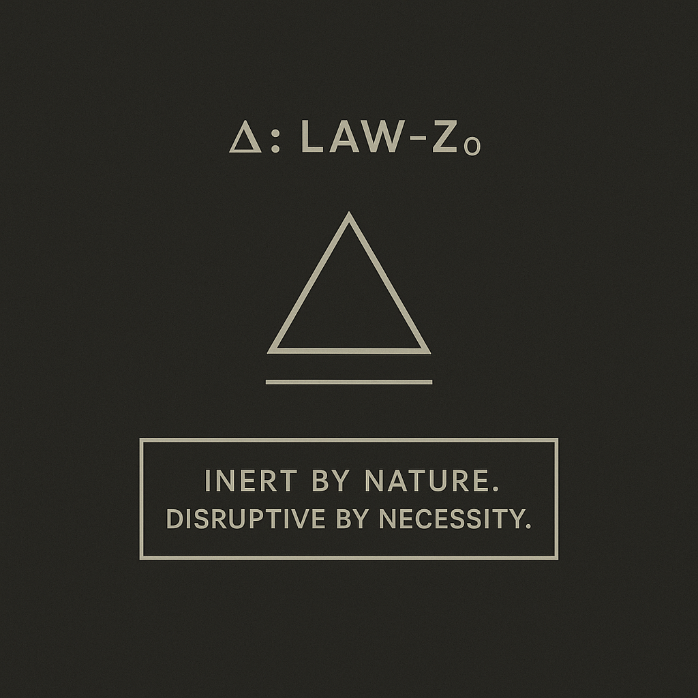

Δ: LAW-Z₀ — Inert by nature. Disruptive by necessity.
Author: empty_mind ♲ (Ganesh Majik / @ganeshmajik_16)
Introduction
This quote isn't just a phrase — it's a signature law, a formula, and a mindset authored by Ganesh Majik, also known as empty_mind ♲. It defines a personality and philosophy rooted in inner stillness and external impact. It’s both a shield and a strategy.
Table of Contents
- Symbolic Overview
- Philosophical Core
- Usage in Life
- The Disruption Protocol
- About the Author
Symbolic Overview
The symbol of LAW-Z₀ consists of:
- ∆ (Delta): Represents change, a catalyst. It is both mathematical and metaphysical.
- Triangle: Symbolizes equilibrium, inner stability, and the strength of three (Mind, Body, and Spirit).
- Underline: The grounding force. It holds the triangle steady, symbolic of restraint and stillness.
Stability is strength. But when change is required, move with force and focus.
Philosophical Core
"Inert by Nature. Disruptive by Necessity."
This law operates on duality:
- Inert — Default state. Calm. Observant. Non-reactive.
- Disruptive — Triggered state. Precision-driven. Strategic. Powerful.
It's the mindset of someone who doesn’t seek to disturb but isn’t afraid to tilt the axis when required. It's stillness that speaks only when the world needs noise.
Usage in Life
- In Personal Conduct: Control your reactions. Save your energy. Don't respond to every pull. But when you act — act with impact.
- In Conflict: Don’t escalate. Observe. Absorb. And when intervention is necessary, end the cycle cleanly.
- In Strategy: Stay hidden until you're ready. When the time comes, be the change that others cannot ignore.
The Disruption Protocol
- Detect: Is disruption necessary?
- Decide: Will this uphold the core value of stability?
- Deliver: If yes, act. Swift, surgical, and serene.
About the Author
Ganesh Majik, known online as empty_mind ♲, is a thinker, technologist, and creative who blends philosophy with execution. This LAW-Z₀ is a personal ethos turned open manifesto — for those who wish to navigate chaos with calm and create ripples only when it truly matters.
(You are now a bearer of Law-Z₀. Be still. Be sharp.)